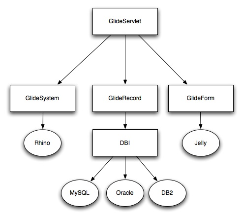

Glide Stack
From ServiceNow Wiki
| |
Note: This article applies to Fuji. For more current information, see Glide Stack at http://docs.servicenow.com
The ServiceNow Wiki is no longer being updated. Please refer to http://docs.servicenow.com for the latest product documentation. |
Contents
1 Overview
Glide is an extensible Web 2.0 development platform written in Java that facilitates rapid development of forms-based workflow applications (work orders, trouble ticketing, and project management, for example).
2 User Interface Stack Technology Map
| Java Packages | Technologies Used | |
|---|---|---|
| User Interface (Browser) | DHTML CSS JavaScript | |
| com.glide.ui com.glide.jelly |
GlideServlet | Apache Jelly |
| com.glide.script | Business Rules | Mozilla Rhino |
| com.glide.db | Persistence | JDBC |
2.1 GlideServlet
The primary driver of Glide, and the only servlet in the system, is found in GlideServlet.java. The GlideServlet:
- Handles inbound action requests
- Renders pages
- Merges data with forms
- Presents to user
- Interfaces with script layer
2.2 Business Rules
- ECMA / JavaScript implementation based on Mozilla Rhino
- Interfaces with persistence layer using JDBC recordset interface
- Merges persistence layer meta-data with data for easy correlation
2.3 Persistence
- Persistence means any store
- RDBMS
- LDAP
- File system
- Uniform access regardless of store type
- Provides QUID and meta-data capabilities
- Interfaces presented to callers
- RecordSet
- TableDescriptor
- ElementDescriptor
3 Diagram

{kind=link}
Was this article helpful?
Yes, I found what I needed
No, I need more assistance